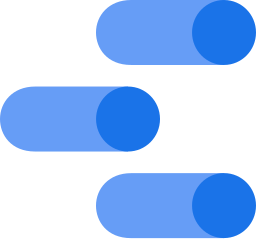

Actuarial Intern Asuransi ASEI Indonesia, since Aug 2026
Degree
Actuarial Science IPB University, Class of 2026
GPA
3.61 / 4.00 · Cum Laude
PAI exams
CF3 · CF4passed
Based in
Jakarta, Indonesia
About
I'm Arsyad, an actuarial science graduate from IPB University. I have worked on both sides of Indonesian insurance: inside an insurer at ASEI, and at the deposit insurer LPS on insurer financial data.
My thesis on annuity pricing is solo work. The other projects on this page were done in teams of four.
3 internships
Insurer, deposit insurer and bank: ASEI, LPS, BRI
800+ statements
Insurer financial statements standardized at LPS
Solo thesis
Annuity pricing under the CIR model, 2.88% test MAPE
VP of Research
AAID, a national actuarial student community, 2025–2026
Three internships across insurance, deposit insurance and banking
Aug 2026 – now
Intern, Actuarial Division
Perusahaan Asuransi ASEI Indonesia
Process and analyze statistical data for insurance product pricing and actuarial assessments.
Support the calculation and review of technical reserves under PSAK 117 / IFRS 17 and applicable actuarial standards.
Prepare actuarial reports and analyses for internal management and regulatory reporting.
Perform product profitability analysis and long-term cash flow projections.
Excel
May 2026 – Aug 2026
Intern, Insurance Data Management Group
Lembaga Penjamin Simpanan (LPS)
Collected and standardized 800+ financial statements from conventional and sharia insurers.
Automated Python data validation, flagging inconsistencies, missing values and anomalies.
Built structured datasets and reporting files that made insurance data analysis more reliable.
Python
Oct 2025 – Apr 2026
Intern, Activation Implementation Department
PT Bank Rakyat Indonesia (Persero) Tbk · Culture Transformation Group
Cleaned and consolidated employee survey datasets using Python, RStudio and Excel.
Analyzed employee engagement survey results and turned findings into actionable insights.
Developed interactive Looker Studio dashboards to monitor KPIs and track performance.
Python
RStudio
Excel

Looker Studio
Leadership
Feb 2025 – Jun 2026
Vice President of Research
Komunitas Anak Aktuaria Indonesia (AAID), a national actuarial student community
Designed and managed academic development programs for actuarial students nationwide.
Supervised department members and kept the research work plan on schedule.
Jan 2025 – Dec 2025
Director, Sport and Arts Management
Actuarial Sciences Students Association (ASSA), IPB University
Led the planning and execution of sports and arts programs for actuarial students.
Research & projects
One solo thesis and three course projects done in teams of four
4 projects. Pick one to open it.
Reversionary Annuity Pricing under the CIR Model
Undergraduate thesis · Nov 2025 – Jun 2026
Net monthly premium for a multi-life reversionary annuity covering two parents and two children: benefits start once both parents have died and continue while at least one child is alive. Bank Indonesia's policy rate (BI 7-Day Reverse Repo Rate, Jan 2019 – Dec 2025) was modeled with a Cox–Ingersoll–Ross process estimated by ordinary least squares; survival probabilities come from the Indonesian Mortality Table 2023, assuming deaths are spread evenly within each year of age (UDD). Premiums were priced for a family aged 30, 27, 3 and 1, across four policy scenarios over a 15-year term.
Result
Value
MAPE of the CIR model on test data (9.75% on training)
2.88%
Net monthly premium across the four scenarios
Rp17,925 – 18,328
Monthly premium gap, joint life vs. last survivor
Rp385
Try it: pick a scenario
Net monthly premium by scenario. Scenario numbers follow Table 7 of the thesis.
One combined contract
Separate per insured
Parents: last survivor
Parents: joint life
Rp17,943/ month
Scenario 1: last survivor, one combined contract. Rp18 more than the cheapest scenario.
What the thesis found
The CIR model tracks the BI-Rate closely. Fitted on 70 months and tested on the last 14, it reached a MAPE of 2.88% on the test period.
Joint life costs more than last survivor. Covering the parents on a joint life basis raises the monthly premium by about Rp385.
Separate contracts are slightly cheaper. Pricing each insured separately and adding them up comes out Rp18–19 below one combined contract.
Type
Undergraduate thesis, IPB University
Data
BI 7-Day Reverse Repo Rate, monthly 2019–2025; Indonesian Mortality Table 2023
Method
CIR model (Euler–Maruyama, OLS), UDD, equivalence principle; built in R
Journal article draft · co-author in a team of 4 students, with a faculty supervisor
Modeled 1,340 health insurance claims with a five-component lognormal mixture fitted by the EM algorithm (Kolmogorov–Smirnov p = 0.99), then compared standard Monte Carlo with antithetic variates, stratified sampling and importance sampling for estimating 95% VaR and TVaR. Each method ran 10,000 simulations, replicated 200 and 500 times, and was judged on bias, variance, MSE, efficiency and computing time.
Result
Value
Analytical 95% VaR of claim size, the benchmark (TVaR 46,203; dataset claim units)
41,406
Efficiency of stratified sampling for VaR
1.74×
Efficiency of importance sampling for TVaR
2.87×
Efficiency is the variance of standard Monte Carlo divided by the variance of the technique, over 200 replications; above 1× means more precise for the same number of simulations.
What the paper found
A five-lognormal mixture fits the claims. The Kolmogorov–Smirnov statistic was 0.0119 against a critical value of 0.0372.
Stratified sampling is best for VaR. It gave the lowest MSE and the highest efficiency at both 200 and 500 replications.
Importance sampling is best for TVaR, but it is the slowest method and performed worse than standard Monte Carlo for VaR.
Capstone paper · co-author in a team of 4 students, with a faculty supervisor
Compared Butterfly and Broken Wing Condor call spreads as hedges for gold futures, using 2024 daily prices from Yahoo Finance, the Black-76 model with a 3-month maturity, and a lognormal price distribution to estimate each strategy's probability of profit.
Result
Value
Annualized volatility of gold futures in 2024
15.14%
Probability of profit: Broken Wing Condor vs. Butterfly
49.8% vs 28.3%
Chance of landing in the max-profit range, same comparison
41.8% vs 1.9%
What the paper found
Both spreads cap the losses that an unhedged gold futures position would face.
The Butterfly has the higher peak (about 98.9 per contract at 2,641) but only a 28.3% chance of ending in profit.
The Broken Wing Condor costs more up front (net debit 48.91 vs 33.11) but profits across a much wider range, 2,458 to 2,824.
Measured the prediction accuracy of Ridge Regression, K-Nearest Neighbors, Random Forest and XGBoost on AMD stock data from 2014 to 2024, before and after reducing dimensions with principal component analysis.